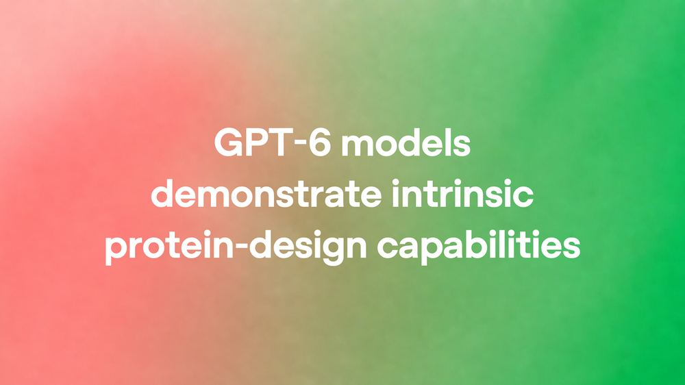

88科技/AI · 1
GPT-6 模型展现内在蛋白质设计能力：不调用专用生物模型，湿实验 322 个设计 35 个结合（HN 181 分）
OpenAI 11 月 24 日发布预印本，称 GPT-6 系列仅凭推理和通用代码即可设计蛋白质三维结构与氨基酸序列，生成环节无需专用生物模型。与 Onava 合作的湿实验中，GPT-6.2 设计的 322 个微型结合蛋白覆盖 5 个靶点，35 个（10.9%）检出结合；抗体结合环重设计 182 个里 128 个（70%）仍结合。内部模型在 MotifBench 上 43.7% 达标、高于专用模型 RFdiffusion 的 27.8%，但完整结构预测仍是明显短板（TM-score 0.38 对 ESMFold2 的 0.93）。当日 Hacker News 181 分、54 条评论。
💡 点评这是通用推理模型第一次把「设计新蛋白」做进自己的工具箱，而不是当专用模型的调度壳。RFdiffusion 原始论文命中率 19% 的对照也摆在文里，OpenAI 自己承认尚未端到端，分寸比宣传语更可信。
Hacker News · 原文 →